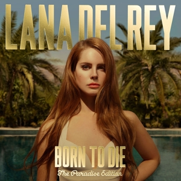

O Nás
Festival v Miami je vždy plný energie a barev. Každoročně přitahuje tisíce návštěvníků, kteří se chtějí ponořit do kultury, hudby a gastronomie. Na festivalu můžete zažít živé vystoupení různých umělců, od místních talentů po světové hvězdy. Atmosféra je nabitá tancem a radostí, s pestrými stánky, které nabízejí tradiční pokrmy. Rodiny si užijí speciální aktivity pro děti a umělecké dílny, kde si mohou vyzkoušet své kreativní dovednosti. Večer festivalu vyvrcholí ohňostrojem, který osvětluje noční oblohu. Místní umělci vystavují svá díla, a tak se můžete seznámit s místní kulturou. Miami je skutečně místem, kde se setkávají kultury a oslavuje se život, což dělá z festivalu nezapomenutelný zážitek pro všechny generace.
Zpěváci
Taylor Swift

Taylor Alison Swift (* 13. prosince 1989 West Reading, Pensylvánie)je americká zpěvačka, textařka, skladatelka, multiinstrumentalistka, režisérka a herečka. Je jednou z nejúspěšnějších zpěvaček počátku 21. století, v roce 2023 se stala autorkou s historicky nejvíce alby na prvním místě v hitparádách časopisu Billboard.[1] Její úspěch tkví dle novinářů a fanoušků v několika zásadních ohledech, a to schopnosti psát texty písní s emocionálními příběhy, se kterými se posluchači mohou identifikovat, udržováním více osobního vztahu se svými fanoušky, a také tomu, že její hudba pokrývá více žánrů od country, popu a indie, a zasahuje tak široké spektrum posluchačů.
Lana Del Ray
Elizabeth Woolridge Grant (* 21. června 1985[1] Lake Placid, New York), známá pod uměleckým pseudonymem jako Lana Del Rey, je americká zpěvačka a skladatelka. Její hudba se vyznačuje kinematografickým stylem, posedlostí tématy tragické romantiky a melancholie, a odkazy na americkou pop kulturu 50. a 60. let
Náš Tým
Marketing je klíčovým nástrojem pro budování značky a dosažení zákazníků, který zahrnuje analýzu trhu, segmentaci a efektivní komunikaci. Díky správné marketingové strategii mohou firmy zvýšit svou viditelnost, posílit vztahy se zákazníky a maximalizovat zisk.
Bořek Stavitel
Marketing
Headmaster, neboli ředitel školy, je zodpovědný za řízení školního prostředí, vedení pedagogického sboru a zajištění kvalitního vzdělávání. Jeho úkolem je také komunikace s rodiči, organizace školních aktivit a zajištění souladu školy s legislativními a vzdělávacími standardy.
Stanislav Skočdopole
Headmaster
Prodeje jsou základním faktorem úspěchu každého podnikání, protože přímo ovlivňují příjmy a růst společnosti. Úspěšný prodejní proces zahrnuje identifikaci potřeb zákazníků, efektivní prezentaci produktů a budování dlouhodobých vztahů s klienty.